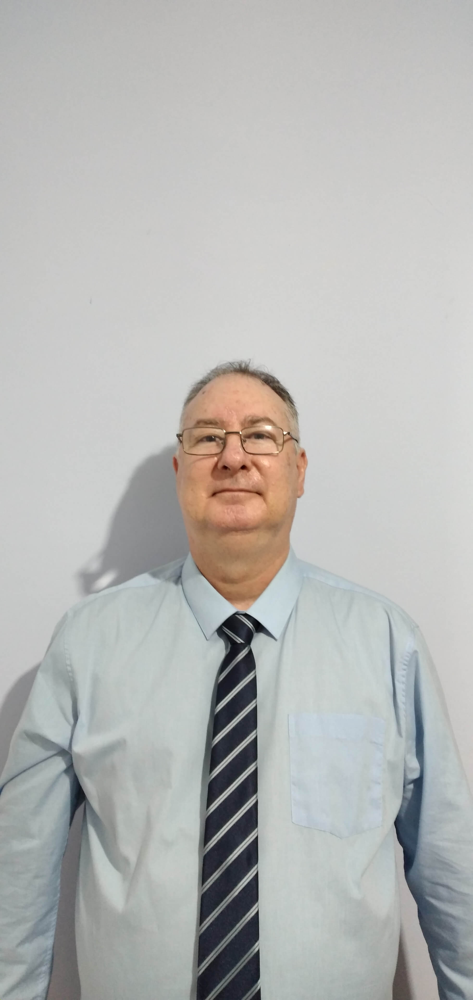

Plataforma Web - Doceria
Solução digital ponta a ponta desenvolvida para o mercado de confeitaria. Focada em uma experiência visual atraente, navegação fluida e apresentação estratégica do catálogo de produtos.

Técnico em Desenvolvimento de Sistemas com sólida bagagem teórica e prática, unindo a base acadêmica de Análise e Desenvolvimento de Sistemas à formação especializada de Programador Front-End pelo SENAI SP. Possuo conhecimento prático na construção de soluções ponta a ponta (Full Stack), utilizando tecnologias como React.js, Angular, Node.js, Java, Spring Boot, mySQL e Python. Domino o ecossistema Git, prototipagem no Figma, Postman e metodologias ágeis. Com vivência em entregas reais, desenvolvi soluções de ponta para o mercado freelancer, incluindo plataformas web completas para os nichos de confeitaria e estética. Busco aplicar minha especialização em IA industrial (SENAI RJ) e fundamentos de redes (Cisco NetAcad) para acelerar entregas de valor onde possa ter uma oportunidade.
Solução digital ponta a ponta desenvolvida para o mercado de confeitaria. Focada em uma experiência visual atraente, navegação fluida e apresentação estratégica do catálogo de produtos.
Website institucional e de conversão estruturado para o segmento de estética e beleza. Focado em agendamento, apresentação de portfólio de serviços e alta conversão de clientes.
Se você é um Tech Recruiter ou líder técnico, entre em contato através do formulário abaixo ou diretamente pelo meu e-mail profissional.